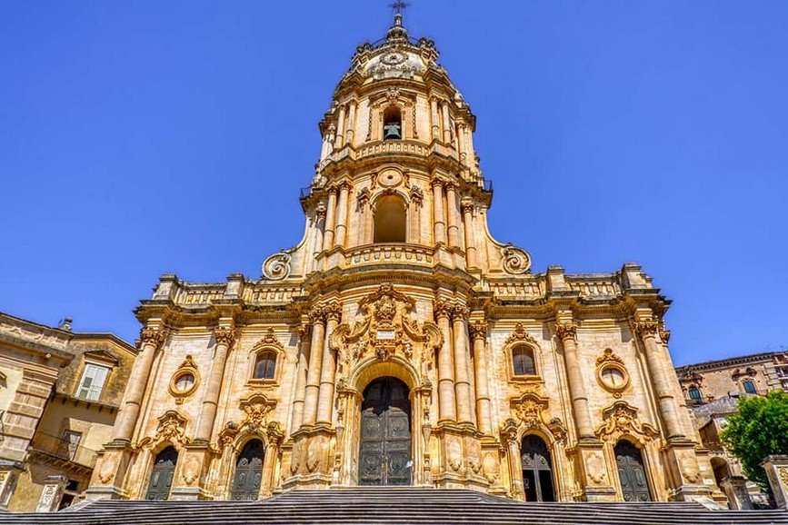
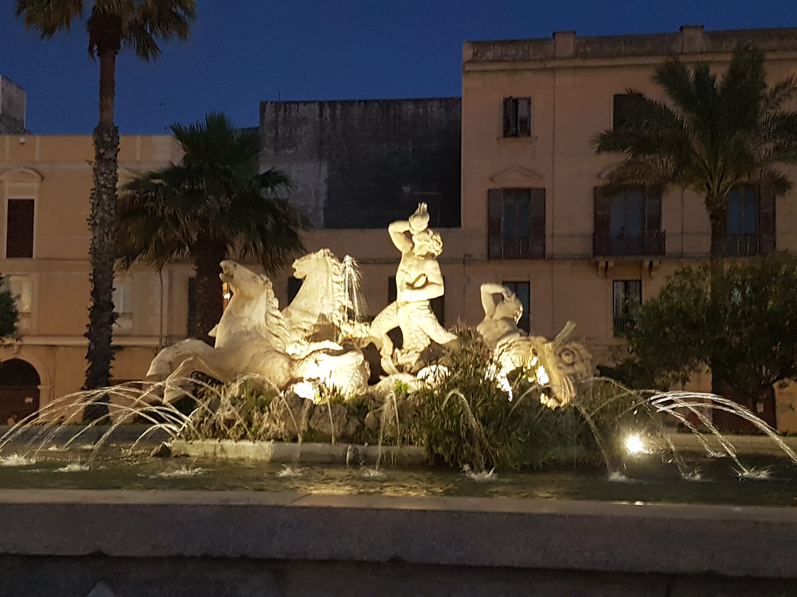

Fontana dell'Amenano

La fontana dell'Amenano è una fontana ubicata a Catania, sul lato sud di Piazza del Duomo, di fronte al palazzo degli Elefanti e accanto al palazzo del Seminario dei Chierici.
La fontana, scolpita nel 1867 dal maestro napoletano Tito Angelini in marmo di Carrara, rappresenta il fiume Amenano come un giovane che tiene una cornucopia dalla quale fuoriesce dell'acqua che si versa in una vasca dal bordo bombato. L'acqua, tracimando da questa vasca, produce un effetto cascata che dà la sensazione di un lenzuolo. Da qui il modo di dire in siciliano "acqua a linzolu" per indicare la fontana.
Palazzo Pretorio

Il Palazzo Pretorio, noto anche come Palazzo delle Aquile, si trova in Piazza Pretoria, sul confine del quartiere Kalsa, vicino ai Quattro Canti. È la sede di rappresentanza del Comune di Palermo.
L'edificio ha forma rettangolare, con cortile centrale. Sul portale, che dà su Piazza Pretoria, campeggia l'aquila, simbolo della città di Palermo. I quattro prospetti sono orientati secondo i punti cardinali, l'ingresso principale volge a settentrione affacciato su Piazza Pretoria e la monumentale Fontana Pretoria.
Chiesa di Santa Lucia alla Badia

La chiesa di Santa Lucia alla Badia è una chiesa di Siracusa, situata in Piazza Duomo e dedicata alla Santa Patrona siracusana.
All'origine sede di un monastero del XV secolo, venne interamente distrutta dal terremoto del 1693, e la ricostruzione è da attribuire alla madre badessa delle suore cistercensi tra il 1695 ed il 1703; l'architetto Luciano Caracciolo ne diresse i lavori. La chiesa custodisce il celebre dipinto di Caravaggio "Seppellimento di Santa Lucia".
Orologio Astronomico

L'orologio astronomico di Messina, parte della cattedrale della città, fu costruito dalla ditta Ungerer di Strasburgo nel 1933. È integrato nel campanile della chiesa, di cui costituisce l'elemento più caratteristico; stando ad alcune fonti, si tratterebbe del più grande orologio astronomico mai costruito, per quanto le sue componenti sono distribuite sui vari lati e diversi livelli di altezza del campanile.
Alcune sono costruite sul lato del campanile che dà sulla piazza, altre si trovano sul lato rivolto verso la facciata della chiesa.
Duomo di San Giorgio

Il Duomo di San Giorgio è il principale monumento di Ragusa Ibla e uno dei capolavori del barocco siciliano. Progettato dall'architetto Rosario Gagliardi nel XVIII secolo, la chiesa sorge in cima a una scenografica scalinata che si apre sulla Piazza del Duomo.
La sua facciata tripartita, con colonne che si sovrappongono verticalmente fino alla cupola neoclassica, è considerata uno degli esempi più raffinati dell'architettura sacra barocca in Sicilia. L'insieme è patrimonio UNESCO dal 2002.
Chiesa di San Francesco d'Assisi
.jpg)
La Chiesa di San Francesco d'Assisi è uno dei monumenti più significativi di Enna, che affaccia direttamente su Piazza Vittorio Emanuele II. L'edificio risale al XIV secolo in stile gotico, con un campanile del XVI secolo che domina la piazza.
L'interno custodisce importanti opere d'arte sacra, tra cui pregevoli statue lignee processionali che vengono portate in processione durante le festività patronali. Il sagrato della chiesa è uno dei punti panoramici più suggestivi del centro storico.
Cattedrale di Santa Maria la Nova

La Cattedrale di Santa Maria la Nova è il principale luogo di culto di Caltanissetta e domina Piazza Garibaldi con la sua imponente facciata barocca. Dedicata alla Vergine Maria e al patrono San Michele Arcangelo, la cattedrale fu costruita nella seconda metà del XVII secolo su progetto dell'architetto Natale Masuccio.
L'interno a tre navate è riccamente decorato con affreschi, stucchi e opere d'arte. Particolarmente pregiato è il ciclo di dipinti nella navata centrale, opera del pittore fiammingo Guglielmo Borremans.
Teatro Luigi Pirandello

Il Teatro Luigi Pirandello è il principale teatro storico di Agrigento, dedicato al celebre drammaturgo e scrittore agrigentino Premio Nobel per la Letteratura nel 1934. Sorge affacciato su Piazza Pirandello nel cuore del centro storico.
L'edificio ottocentesco, con la sua elegante facciata neoclassica, ospita regolarmente stagioni teatrali, lirichee e rappresentazioni delle opere del grande drammaturgo. È uno dei simboli culturali della città e punto di riferimento per gli amanti del teatro siciliano.
Fontana del Tritone

La Fontana del Tritone è uno dei simboli della Trapani moderna e si trova nelle vicinanze di Piazza Vittorio Emanuele, all'ingresso del porto cittadino. La fontana raffigura Tritone, il dio marino figlio di Poseidone, nell'atto di reggere un grande scudo con lo stemma della città.
Realizzata in marmo bianco, la fontana costituisce un importante punto di riferimento visivo e di ritrovo per i trapanesi. La sua posizione privilegiata, affacciata sul porto e sulle acque del canale, la rende uno degli scorci più fotografati della città.